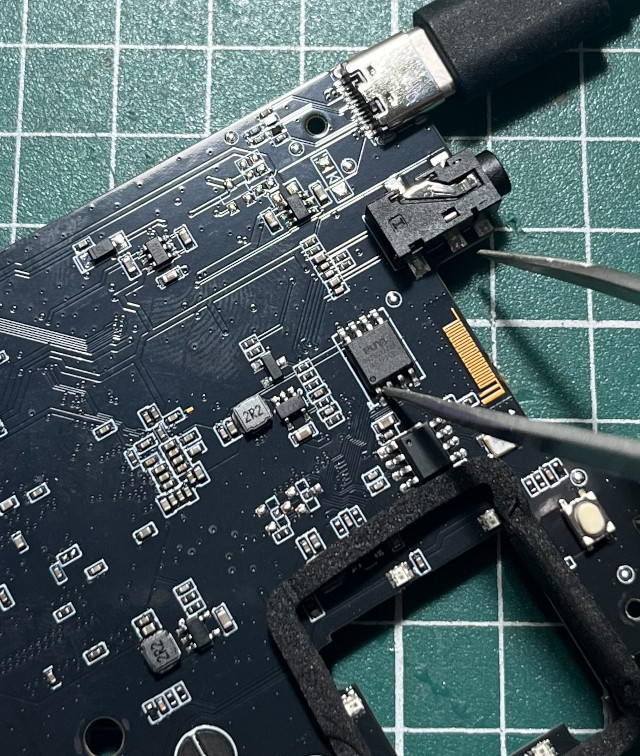

短路SPI 1、2腳位

$ lsusb
Bus 003 Device 118: ID 1f3a:efe8 Allwinner Technology sunxi SoC OTG connector in FEL/flashing mode
$ sunxi-fel --list
Warning: no 'soc_sram_info' data for your SoC (id=1859)
USB device 003:127 Allwinner 0x1859